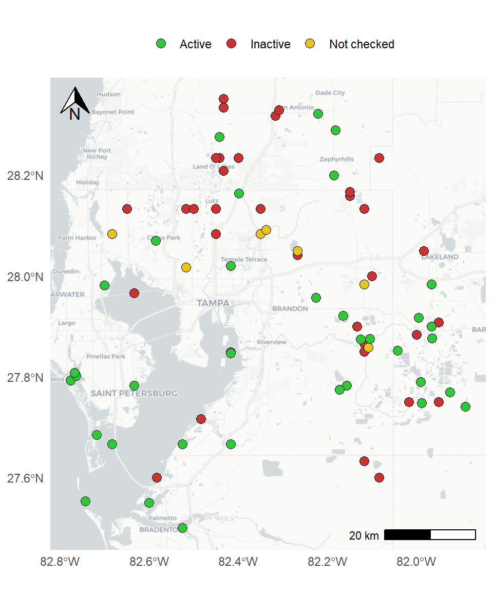

County | 2018 | 2019 | 2020 | 2021 | 2022 |
|---|---|---|---|---|---|
Manatee | 1,003 | 1,158 | 930 | 1,089 | 1,165 |
Hillsborough | 151 | 152 | 96 | 137 | 120 |
Pinellas | 549 | 807 | 528 | 497 | 686 |
Totals | 1,703 | 2,117 | 1,554 | 1,723 | 1,971 |
FW-6
Preserve the diversity and abundance of bay wildlife
OBJECTIVES:
An umbrella action to protect important fish and wildlife populations in the bay watershed, specifically by supporting research; habitat protection and restoration, compliance with laws to protect fish and wildlife; and education initiatives that foster species diversity and abundance. Support research, management and education to protect listed species and other important wildlife populations in the Tampa Bay watershed. Implement the Bay Habitats Action Plan to achieve targets and goals for critical fish and wildlife habitats. Continue and expand scientific and community-based wildlife monitoring programs. Give priority consideration to TBEP Bay Mini-Grant projects that address listed and potentially imperiled species. Identify species about which more data is needed to assess status.
STATUS:
Ongoing. Action expanded to address a variety of threats to fish and wildlife, including climate change. Revised action specifically addresses colonial waterbirds and beach-nesting shorebirds. Strategy encourages support for research, management and monitoring of listed, threatened and endangered species, as well as unlisted species for which information gaps exist.
BACKGROUND:
The Tampa Bay Area supports more than 40 species listed as Threatened or Endangered by the United States Fish and Wildlife Service (USFWS) or listed as Threatened or Species of Special Concern by the Florida Fish and Wildlife Conservation Commission (FWC). They inhabit a wide variety of habitats from the bay proper to its mangrove islands, rivers, tidal streams, marshes, freshwater wetlands, sandy beaches and upland forests. Many species require different habitats at various life stages.

Many of the bay’s most visible and beloved species are well-documented. For example, Audubon first began protecting and monitoring colonial waterbird populations in 1934; Audubon staff currently manage and assess 30 nesting colonies on islands in and around Tampa Bay. Sea turtle nests on bay area beaches and barrier islands are surveyed and safeguarded annually. In 2016, 1595 loggerhead turtle nests were confirmed. Green and leatherback turtle nests are very rare on Tampa Bay area beaches. Research has shown that the bay itself is an important nursery area for juvenile Kemp’s ridley sea turtles, one of the world’s most endangered species.
The status of many other species is unclear, and basic population assessments are lacking. For example, little is known about diamondback terrapin populations in Tampa Bay because the animals are shy, reclusive and difficult to study.
Protecting and enhancing fish and wildlife populations requires a combination of management and educational strategies, including habitat protection and restoration, assessment and monitoring, enactment and enforcement of laws that protect vulnerable species, and education of citizens and visitors. These overall strategies ideally take into account multiple threats to the long-term health of the bay’s fish and wildlife:
- Habitat loss or degradation
- Competition from invasive species
- Overharvesting
- Pollution
- Natural disasters, such as hurricanes
- Climate change, including increased air and water temperatures, sea level rise, changes in precipitation and ocean acidification
Protecting and restoring key habitats, including priority nesting and nursery areas, seasonal refuges and critical travel or migration pathways, is a fundamental basis for sustaining diverse and abundant fish and wildlife populations. Restoration activities that create habitat mosaics of functional ecosystems will prove more resilient in the future (See Actions BH-1 and CC-1).

Tidal streams are nursery areas for fish. More than 100 tidal streams flow to the bay from major rivers to tiny creeks a person could jump across. Many begin in the far reaches of the watershed. These streams are vitally important to foraging birds and juvenile fish, including snook. Researchers are working to identify tidal stream habitat features most favored by juvenile snook, and to test management techniques. Protecting and restoring tidal streams is expected to bolster the bay’s snook populations, which support a recreational fishery that generates more than $1 million in annual revenues (see Action BH-9).
Beaches are vital for shorebirds. More than 45,000 pairs of beach-nesting birds, such as the snowy plover, American oystercatcher, black skimmer, laughing gull and least tern, lay their eggs and raise their young on area beaches. Fragmentation, degradation and erosion of suitable beach nesting habitat, and increased disturbance by recreational beachgoers, threaten the continued existence of these charismatic birds. FWC, Audubon Florida, and Eckerd College staff work with land managers to protect critical nesting areas at Egmont Key National Wildlife Refuge and Shell Key County Preserve. Volunteer “Bird Stewards” attend to vulnerable beach nesting colony sites on busy weekends, educating beachgoers about the need to steer clear of shorebird colonies.
Enforcement is also needed in critical nesting areas. People and their pets can trample nests and cause parent birds to take flight, leaving eggs or hatchlings vulnerable to predators and hot summer temperatures.
Beach renourishment, where and when appropriate, can help to maintain existing nest sites and create additional habitats. Man-made spoil islands used for disposal of material dredged from the bay bottom can serve a similar benefit (see Actions DR-1 and DR-2).
Mangrove islands support colonial waterbirds. Bay mangrove islands support some of the most diverse waterbird nesting colonies in North America, annually hosting approximately 40,000 to 50,000 breeding pairs at nearly 30 estuary island sites and another 10 inland colony sites within the watershed. Some 23 species nest in colonies and another six species nest in or near bird colonies. Populations of several species (reddish egret, roseate spoonbill, American oystercatcher) are stable or increasing, while others are in decline (snowy egret, little blue heron, tricolored heron and white ibis).

The two islands comprising the Richard T. Paul Alafia Bank Bird Sanctuary are among the largest and most diverse waterbird colonies in the continental United States, with nearly 18,000 nesting pairs of 16 to 20 species of birds. Erosion, caused by storm waves and boat wakes, is a significant threat to these and other nesting island and shorelines in the watershed. More than 2,000 feet of oyster reef was created as a wave break for Alafia Bank to slow erosion, improve water quality, and promote growth of salt marsh and mangroves. Another 4,750 feet of living shoreline is being installed with funds from the federal RESTORE Act.
In November 2016, FWC created 13 new and five expanded Critical Wildlife Areas (CWA) in Florida, designed to protect important habitat sites where wildlife nest, breed and forage. A new CWA was established at Dot-Dash-Dit Island at the mouth of the Braden River, which hosts the bay’s only coastal colony of wood storks. The existing CWA at Alafia Bank was expanded. The designation creates a 100-foot buffer around these bird colonies with year-round closures to protect them. Identification of suitable alternative colony nest sites is needed, as natural disasters may eliminate entire nesting populations or habitats. Additionally, colonies may abandon a nesting site for unknown reasons.
A variety of wildlife already is monitored in the bay watershed—from routine sampling of benthic creatures on the bay bottom by the Environmental Protection Commission of Hillsborough County (EPCHC), to stock assessments of popular sportfish by FWC, to manatee counts conducted in the winter when manatees congregate at power plants.

The Tampa Bay Estuary Program’s Bay Mini-Grant program has funded baseline surveys of seahorses and pipefish, neo-tropical migratory songbirds, diamondback terrapins and a rare freshwater turtle recently “re-discovered” in the Alafia River. Community-based programs enlist citizen volunteers to report sightings of mating horseshoe crabs (FWC), count bay scallops (Tampa Bay Watch), collect abandoned, derelict crab traps that continue to ‘ghost fish’ (Tampa Bay Watch), retrieve and recycle fishing line that can entangle and kill birds (Tampa Bay Watch, Audubon Florida), and train “Bird Stewards” to help protect posted shorebird nest sites.
In 2016, FWC adopted new rules for imperiled species detailed in a comprehensive Imperiled Species Management Plan (ISMP) which became effective January 2017. The ISMP addresses individual species in Action Plans containing specific conservation goals, objectives and actions. In addition, the ISMP describes integrated conservation strategies to benefit multiple species and their shared habitats. It focuses on 57 imperiled species in Florida.
Common Name | Scientific Name | Status |
|---|---|---|
Birds | ||
Audubon's Crested Caracara | Polyborus plancus audubonii | FT |
Everglade Snail Kite | Rostrhamus sociabilis plumbeus | FE |
Florida Grasshopper Sparrow | Ammodramus savannarum floridanus | FE |
Florida Scrub-jay | Aphelocoma coerulescens | FT |
Ivory-billed Woodpecker | Campephilus principalis | FE |
Piping Plover | Charadrius melodus | FT |
Red Knot | Calidris canutus rufa | FT |
Red-cockaded Woodpecker | Picoides borealis | FE |
Whooping Crane | Grus americana | Fexp |
Wood Stork | Mycteria americana | FT |
Little Blue Heron | Egretta caerulea | ST |
Tricolored Heron | Egretta tricolor | ST |
Reddish Egret | Egretta rufescens | ST |
Roseate Spoonbill | Platalea ajaja | ST |
Florida Sandhill Crane | Grus canadensis pratensis | ST |
American Oystercatcher | Haematopus palliatus | ST |
Snowy Plover | Charadrius nivosus | ST |
Least Tern | Sternula antillarum | ST |
Black Skimmer | Rynchops niger | ST |
Florida Burrowing Owl | Athene cunicularia floridana | ST |
Southeastern American Kestral | Falco sparverius paulus | ST |
American Kestrel | Falco sparverius paulus | FBCC |
American Oystercatcher | Haematopus palliatus | FBCC |
American Bittern | Botaurus lentiginosus | FBCC |
Bachman's Sparrow | Aimophila aestivalis | FBCC |
Bald Eagle | Haliaeetus leucocephalus | FBCC |
Black Skimmer | Rynchops niger | FBCC |
Black Rail | Laterallus jamaicensis | FBCC |
Black-whiskered Vireo | Vireo altiloquus | FBCC |
Brown Booby | Sula leucogaster | FBCC |
Brown-headed Nuthatch | Sitta pusilla | FBCC |
Chuck-will's-widow | Caprimulgus carolinensis | FBCC |
Common Ground-dove | Columbina passerina exigua | FBCC |
Gull-billed Tern | Gelochelidon nilotica | FBCC |
Henslow's Sparrow | Ammodramus henslowii | FBCC |
Le Conte's Sparrow | Ammodramus leconteii | FBCC |
Least Bittern | Ixobrychus exilis | FBCC |
Least Tern | Sterna antillarum | FBCC |
Lesser Yellowlegs | Tringa flavipes | FBCC |
Limpkin | Aramus guarauna | FBCC |
Loggerhead Shrike | Lanius ludovicianus | FBCC |
Long-billed Curlew | Numenius americanus | FBCC |
Magnificent Frigatebird | Fregata magnificens | FBCC |
Mangrove Cuckoo | Coccyzus minor | FBCC |
Marbled Godwit | Limosa fedoa | FBCC |
Nelson's Sparrow | Ammodramus nelsoni | FBCC |
Peregrine Falcon | Falco peregrinus | FBCC |
Prairie Warbler | Dendroica discolor | FBCC |
Prothonotary Warbler | Protonotaria citrea | FBCC |
Red Knot | Calidris canutus rufa | FBCC |
Red-headed Woodpecker | Melanerpes erythrocephalus | FBCC |
Reddish Egret | Egretta rufescens | FBCC |
Roseate Spoonbill | Platalea ajaja | FBCC |
Rusty Blackbird | Euphagus carolinus | FBCC |
Seaside Sparrow | Ammodramus maritimus | FBCC |
Short-billed Dowitcher | Limnodromus griseus | FBCC |
Smooth-billed Ani | Crotophaga ani | FBCC |
Snowy Plover | Charadrius alexandrinus | FBCC |
Swainson's Warbler | Limnothlypis swainsonii | FBCC |
Swallow-tailed Kite | Elanoides forficatus | FBCC |
Whimbrel | Numenius phaeopus | FBCC |
Wilson's Plover | Charadrius wilsonia | FBCC |
Worm Eating Warbler | Helmitheros vermivorum | FBCC |
Yellow Rail | Coturnicops noveboracensis | FBCC |
Short-tailed Hawk | Buteo brachyurus | FBCC |
Limpkin | Aramus guarauna | SDL |
Brown pelican | Pelecanus occidentalis | SDL |
Snowy egret | Egretta thula | SDL |
White ibis | Eudocimus albus | SDL |
Fishes and Elasmobranchs | ||
Atlantic Sturgeon (gulf Subspecies) | Acipenser oxyrinchus (=oxyrhynchus) desotoi | FE* |
Smalltooth Sawfish | Pristis pectinata | FE |
Mangrove rivulus | Kryptolebias marmoratus | SDL |
Giant Manta Ray | Mobula birostris | FT* |
Insects | ||
Highlands Tiger Beetle | Cicindelidia highlandensis | F cand |
Miami Blue Butterfly | Cyclargus (=Hemiargus) thomasi bethunebakeri | FE |
Mammals | ||
Florida Bonneted Bat | Eumops floridanus | FE |
Florida Panther | Puma (=Felis) concolor coryi | FE |
Puma (=mountain Lion) | Puma (=Felis) concolor (all subsp. except coryi) | FT SoA |
West Indian Manatee | Trichechus manatus | FT* |
Homosassa Shrew | Sorex longirostris eionis | SDL* |
Sherman's Fox Squirrel | Sciurus niger shermani | SDL* |
Florida mouse | Podomys floridanus | SDL |
Reptiles | ||
American Alligator | Alligator mississippiensis | FT SoA |
American Crocodile | Crocodylus acutus | FT |
Bluetail Mole Skink | Eumeces egregius lividus | FT |
Eastern Indigo Snake | Drymarchon corais couperi | FT |
Green Sea Turtle | Chelonia mydas | FE |
Hawksbill Sea Turtle | Eretmochelys imbricata | FE |
Leatherback Sea Turtle | Dermochelys coriacea | FE |
Sand Skink | Neoseps reynoldsi | FT |
Florida Pine Snake | Pituophis melanoleucus mugitus | FT |
Short-tailed Snake | Lampropeltis extenuata | FT |
Suwannee cooter | Pseudemys concinna suwanniensis | SDL |
* Change in designation since 2018 | ||
FT = Federally Listed Threatened | ||
FE = Federally Listed Endangered | ||
F exp = Federally listed Experimental Population | ||
FBCC = Federally Listed Birds of Conservation Concern | ||
FT SoA = Federally listed Threatened (Similarity of Appearance) | ||
ST = State Listed Threatened | ||
SSSC = State Listed Species of Special Concern | ||
SDL = State Delisted Species | ||
TBEP participates in collaborative partnerships within the Tampa Bay and Southwest Florida region to review and coordinate habitat restoration and protection initiatives (see Actions BH-1, BH-2, BH-3, and BH-9). These initiatives include identification of priority sites for acquisition and mitigation.
TBEP has been a leader in educating bay users about responsible water recreation, through boating guides, ethical fishing information and sponsorship of “Leave No Trace” outdoor etiquette workshops. TBEP also informs waterfront homeowners about ways to enhance their shorelines for fish and wildlife, and about coexisting with wildlife.